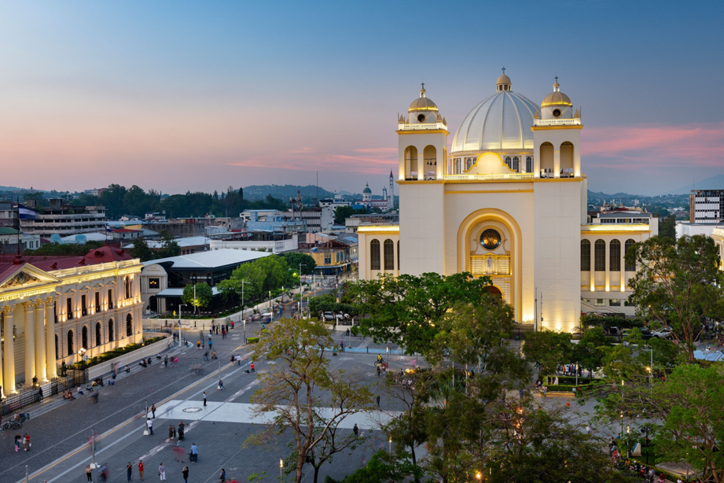
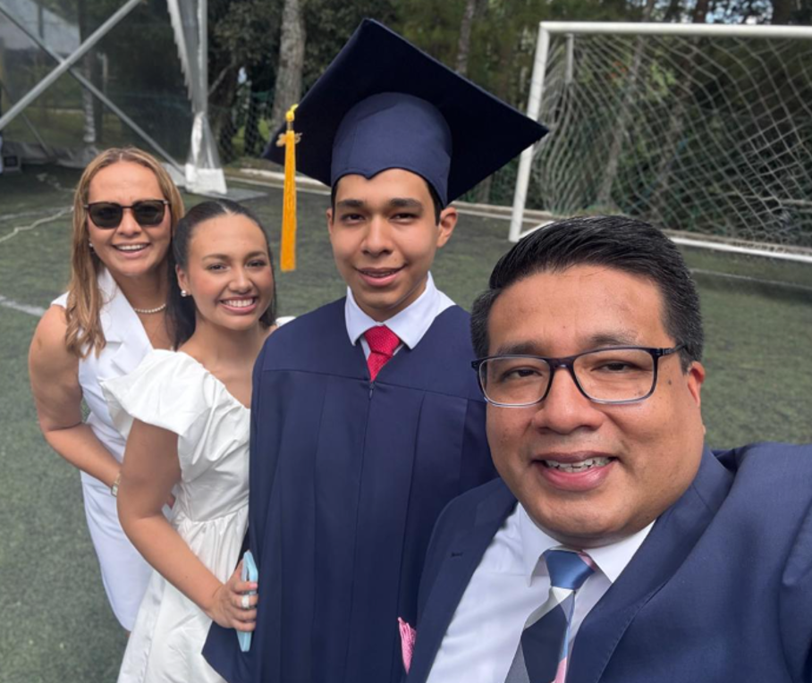
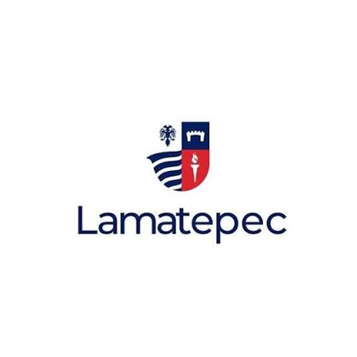

José Eduardo Guzmán Alvarado
Nació el 15 de marzo de 2007 en San Salvador. Eduardo es una persona introvertida y tranquila.
- Edad
- 19 años
- Nacimiento
- 15 de marzo de 2007
- Ciudad
- San Salvador, El Salvador
- Estudios actuales
- Ingeniería de Software y Negocios Digitales

De dónde viene

El papá de Eduardo es de San Salvador y su mamá es de San Sebastián, un pueblo del departamento de San Vicente. Se conocieron ahí, en un evento patronal. Se casaron y tuvieron dos hijos, Eduardo y su hermana Luciana.
Un recorrido por su vida
Eduardo ha vivido la mayor parte de su vida en la misma zona, con algunas mudanzas en el camino:
Pasaje sobre la Avenida Bernal, San Salvador Centro. Asistió al Kínder Horizontes (APCE).
Antiguo Cuscatlán, casa cerca del Colegio San Francisco. Por este tiempo, Eduardo ingresó al Colegio Lamatepec.

Tras el fallecimiento de su abuelo, Eduardo se mudó con su abuela y su tía para brindarles compañía. Ahí pasó la pandemia.
Nuevamente se mudó junto con sus papás y su hermana, cerca de donde vivía su abuela, en Lomas de San Francisco.
Del colegio a la ESEN
Durante los últimos años de colegio, Eduardo cursó el Bachillerato Internacional (IB), evaluado por examinadores externos al país.
Entró a la ESEN bajo la modalidad de Ingreso Temprano, en Ingeniería de Negocios. A mediados de 2026 descubrió su habilidad y verdadera pasión por la computación y se cambió a Ingeniería de Software y Negocios Digitales.
Otros aspectos
A Eduardo no le han gustado mucho los deportes. Pero, durante sus primeros años en el colegio descubrió su verdadera área, la música. Empezó a tocar el piano, costumbre que mantiene hasta hoy, y realizó varios conciertos y giras internacionales con la escuela Generos Music School.